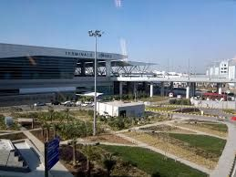

 Kurukshetra does not have its own airport, but through a flight, you can reach Chandigarh (102 km) or Delhi (160 km) and take a cab/bus from there. To get more information on flights to and from chandigarh and delhi, please visit www.airindia.in for Air India and makemytrip for other carriers.
Kurukshetra city is well connected by Indian Railway to all the major cities of India. Kurukshetra is a junction on the Amritsar-Delhi railway line and can be easily reached via trains. To get the list of trains and their schedule, please visit www.indianrail.gov.in
Irctc serviceIn the very first verse of Bhagwad-Gita (धर्मक्षेत्रे कुरुक्षेत्रे समवेता युयुत्सवः | मामकाः पाण्डवाश्चैव किम् अकुर्वत संजय ||), Kurukshetra is described as DHARAMKSHETRA i.e. 'Region of righteousness'. Kurukshetra is a place of great historical and religious importance, revered all over the country for its sacred association with the Vedas and the Vedic Culture. It was here that the battle of Mahabharat was fought and Lord Krishna preached His Philosophy of 'KARMA' as enshrined in the Holy Bhagwad-Gita, to Arjuna at Jyotisar. According to Hindu mythology, Kurukshetra is spread over, a circuit of about 48 KOS, which includes a large number of holy places, temples and sacred tanks connected with the religious events/rituals, Mahabharat War and Kurus, the ancestor of Kauravas and Pandavs. Kurukshetra is intimately related to the Aryan civilization and its growth all along the sacred river Saraswati. It is believed that the holy waters of all sacred rivers flow/converge into Kurukshetra's Sannehit Sarovar, at the time of Somavati 'Amavasya' and solar eclipse. It is believed that those who bath in the tanks in Kurukshetra go to heaven after death. Mahabharata states that one who dies at Kurukshetra attains salvation after death. It is the land where the sage Manu penned his 'Manusmriti' and where learned 'rishis' compiled the Rig Veda and Sama Veda. Kurukshetra is named after King Kuru, who also performed a supreme sacrifice to bring prosperity to the land and his people. ग्रह नक्षत्र ताराणां कालेन पतनाद~भयम् ||
कुरुक्षेत्रे मृताणां च पतन नैव विद्यते ||
"Come one and come all to have a glimpse of the sacred land of eternal bliss and to personally feel its religious and celestial fervour, heritage and ambience."